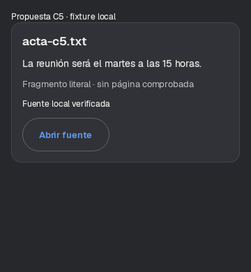
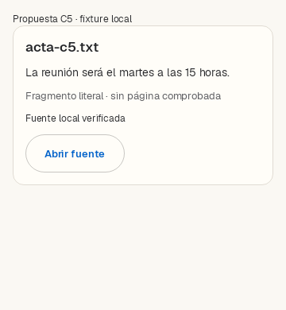

Capturas Compose reales del mismo componente y los mismos datos ficticios, 360 × 390 dp. Reutiliza StudioSurface, Geist y controles existentes. Prototipo aislado de test: no es una nueva pantalla productiva.


Lectura: documento original → fragmento literal → procedencia → acción explícita. Sin página cuando no puede comprobarse. OCR incierto debe indicarse antes de cualquier uso del texto.
El scroll produjo cero aperturas. El botón revalida la referencia y produce un callback; el test no abre Quick Look ni un documento real. No hay integración en la barra ni dueño reactivo de estado visible todavía.
11 casos dirigidos correctos; lint sin errores (26 advertencias, 1 información). Revocación SAF, borrado, modificación de bytes, cancelación y referencias ajenas cubiertos en Robolectric. PDF/OCR del corpus son fixtures de metadatos, sin reconocimiento óptico real.
Contrato, inventario y límites · Casos de dominio y consultas reproducibles